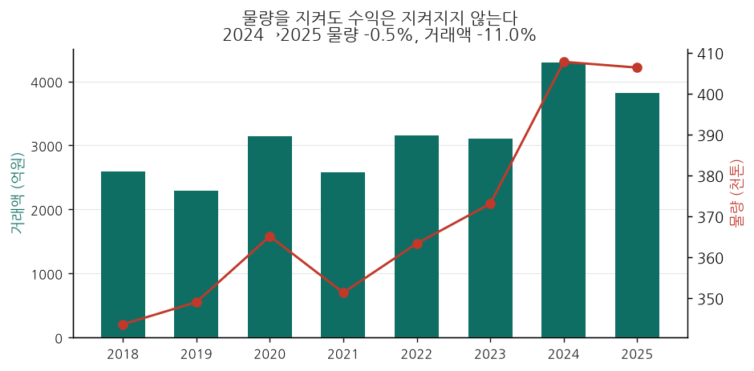
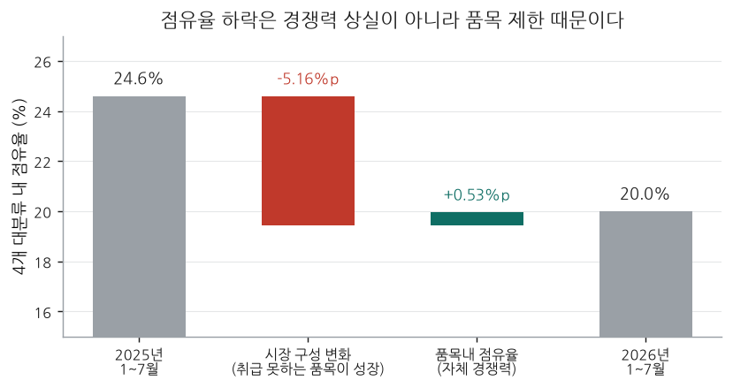

가락시장 대아청과의 익일 채소 반입물량을 경매가 시작되기 전에 예측해 공개합니다. 공개데이터만 사용하며, 매일 게시하고, 맞았는지 틀렸는지를 그대로 기록합니다.
구간이란? 각 예측의 막대는 80% 예측구간입니다 — 실제 반입량이 이 범위 안에 들어올 확률이 10번 중 8번이라는 뜻입니다. 세로선은 중앙 예측값입니다.
모든 예측은 경매가 열리기 전에 게시되고, 게시 시각은 코드 저장소에 커밋으로 남습니다. 사후에 고른 숫자가 아니라, 사건 전에 공개된 기록입니다.
2021년 이후 out-of-sample 검증 결과입니다. 회색 밴드가 80% 예측구간, 검은 선이 실제 반입량입니다. 밴드 밖으로 나간 점이 빗나간 예측입니다.
2024→2025년 거래액이 471억원 줄었지만, 물량은 −0.3%로 거의 그대로였습니다. 빠진 것은 kg당 단가(1,054원 → 941원, −10.6%)입니다. 그리고 단가는 5개 법인 전부 두 자릿수로 빠졌습니다 — 시장 전체 −11.4%. 대아청과만의 문제는 물량입니다. 시장 물량이 +1.0% 느는 동안 다섯 법인 가운데 대아청과만 줄었습니다.

1년간 점유율이 −4.6%p 빠졌는데, 분해하면 전부 취급할 수 없는 품목이 성장한 탓(−5.16%p)입니다. 자기 품목 안에서는 오히려 +0.53%p 올랐습니다.

품목확대는 2026년 말까지 제도적으로 막혀 있습니다. 남은 성장 수단은 제한된 품목 안에서의 운영 효율 하나뿐이고 — 그 한 수단을 데이터로 키우는 것이 이 제안입니다.
공개데이터만으로 갈 수 있는 데까지 왔습니다. 여기가 그 한계입니다. 아래 세 가지가 더해지면 예측 정확도와 운영 효율을 함께 끌어올릴 수 있습니다.
산지 조직·개인을 구분해 출하 신뢰도를 학습합니다.
공개 API보다 세밀한 품위 정보로 가격 분산을 설명합니다.
경매사의 판단·순서 결정 이력을 학습해 운영을 지원합니다.